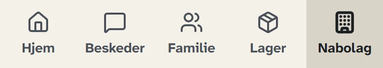
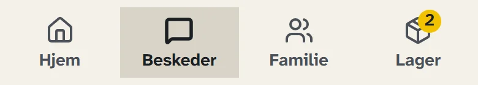
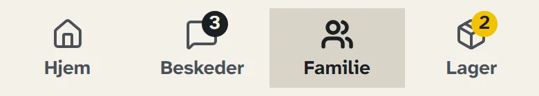
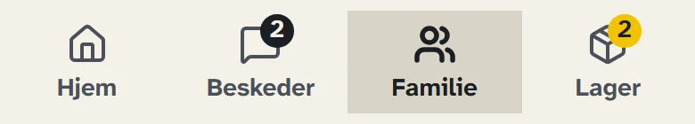
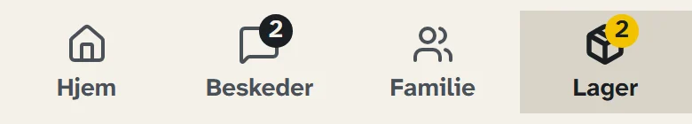
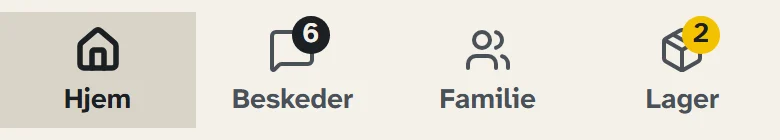
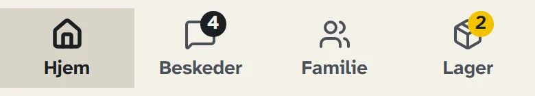
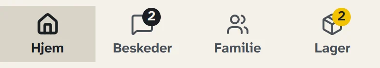
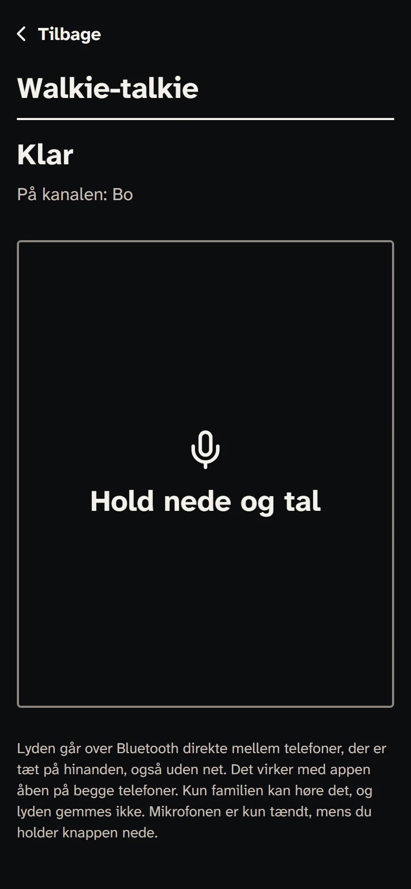

Se appenSee the app
Skærme fra appen med en opdigtet familie: Anne, Bo og Sara. Vælg en skærm, og rul i telefonen for at se det hele.
Screens from the app with a made-up family: Anne, Bo and Sara. Pick a screen, and scroll in the phone to see all of it.
-
»Jeg er ok« og hjælp står øverst, og under dem ser I, hvordan det går med familien.“I’m OK” and help come first, and below them you see how the family is doing.
-
Varerne med udløbsdato, og hvor mange døgn I er klar til.Your items with best-before dates, and how many days you are ready for.
-
Regnet ud for jer efter myndighedernes tal. Prøv beregningen længere nede.Worked out for your family from the authorities’ numbers. Try the calculation further down.
-
Hvem der har sagt ok, hvem I kan nå lige nu, og familiens plan.Who has said OK, who you can reach right now, and the family plan.
-
Spørg alle på én gang, og se, hvem der har svaret.Ask everyone at once, and see who has answered.
-
Familiens samtale med hurtige svar som »Jeg er på vej«.The family conversation with quick replies like “On my way”.
-
Samme samtale, efter nettet forsvandt. Beskeden gik videre fra en telefon i nærheden.The same conversation after the network went away. The message was passed on by a phone nearby.
-
Tryk »Jeg har brug for hjælp«. Du har fem sekunder til at fortryde, og så får familien det med det samme.Press “I need help”. You have five seconds to change your mind, and then the family gets it straight away.
-
Mørk skærm og store knapper, når det gælder.A dark screen and big buttons when it matters.
-
Hold knappen nede, og tal til familien tæt på dig.Hold the button and talk to the family near you.
-
En lukket gruppe for opgangen eller vejen, hvor I inviterer hinanden ind.A closed group for your stairwell or street, where you invite each other in.
















Rul i telefonen for at se hele skærmen.Scroll in the phone to see the whole screen.